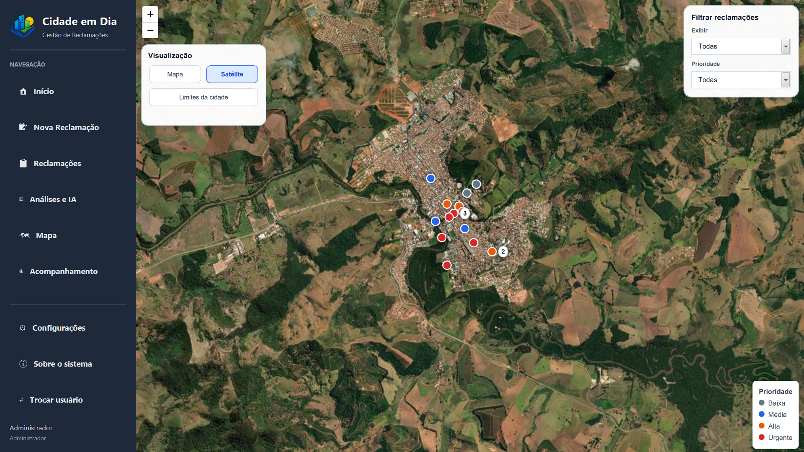
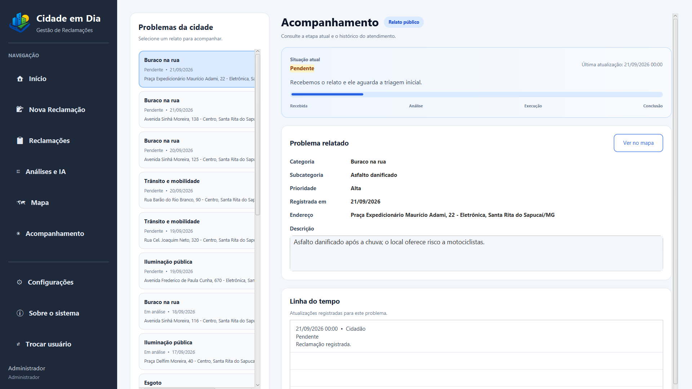
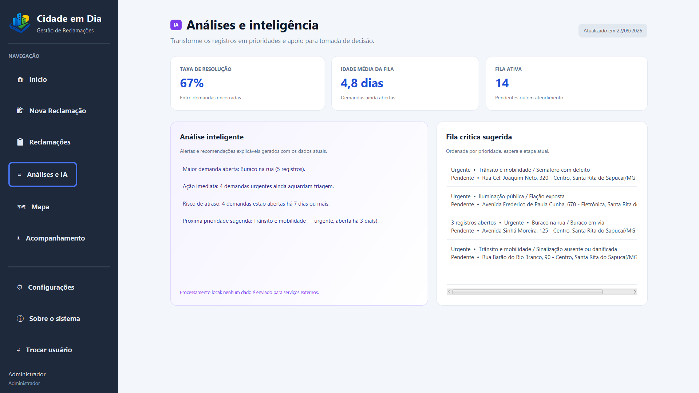
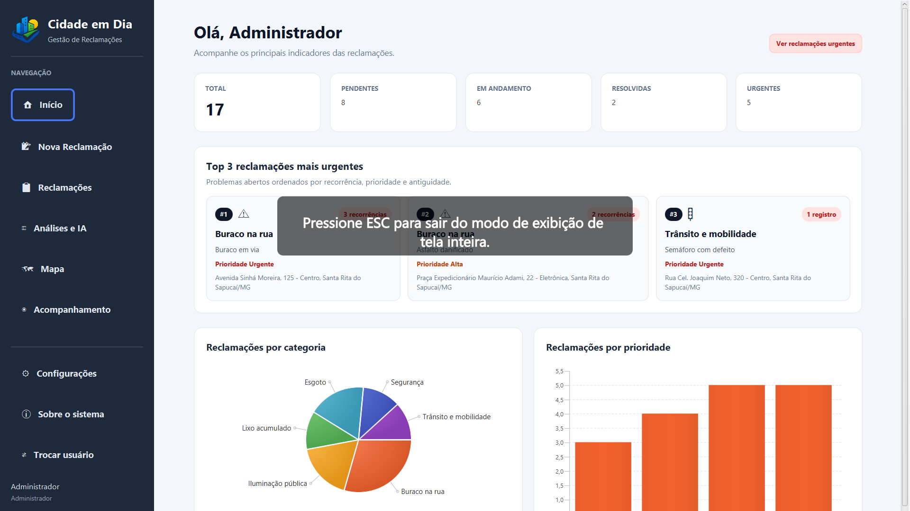
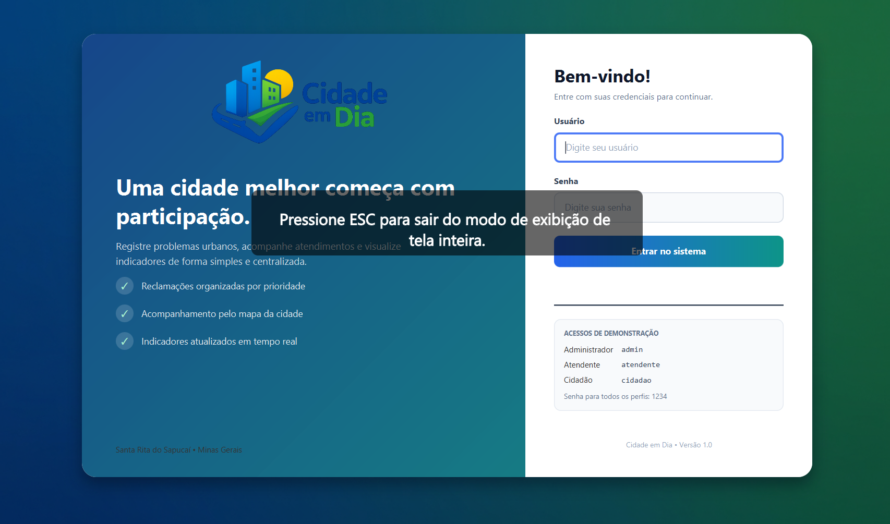

Relate sem complicação
Registre um problema com categoria, prioridade, localização e até quatro imagens.
ver o fluxo →O Cidade em Dia transforma relatos do cotidiano em informação, acompanhamento e ação — aproximando quem vive a cidade de quem cuida dela.
Uma rede que participa
feito para moradores e gestão pública
Do primeiro relato à resolução, cada etapa fica clara para quem participa. Menos ruído, mais contexto e uma cidade que responde melhor.
Registre um problema com categoria, prioridade, localização e até quatro imagens.
ver o fluxo →Uma visão pública dos pontos que precisam de atenção, com filtros por prioridade.
explorar mapa →Veja o andamento, o responsável pela mudança e a última atualização do chamado.
entender etapas →Painéis e filtros ajudam a gestão a priorizar o que realmente importa agora.
ver indicadores →Troque de perfil e veja como a mesma cidade ganha novas possibilidades de cuidado.
Um fluxo simples para quem reporta e poderoso para quem resolve. A cidade acompanha junto.
ver uma demonstração →Conte o que aconteceu, indique o local e adicione uma foto.
O chamado ganha categoria, prioridade e responsável.
Cada mudança de status fica registrada e visível.
O ciclo fecha com transparência e histórico completo.
Uma amostra visual das principais telas do projeto. Quando tiver os screenshots finais, basta adicionar aqui — o espaço já está preparado.
Mapa real do sistema, com chamados públicos, filtros e prioridades.
explorar o painel →
O cidadão acompanha o status e o histórico do atendimento.

Indicadores, fila crítica e sugestões para apoiar a gestão.

Painel inicial com resumo das demandas e atalhos para urgências.

Uma tela de acesso que apresenta a proposta e os perfis do sistema.

Algumas respostas sobre a proposta do Cidade em Dia.
Uma experiência digital para transformar pequenos relatos em grandes melhorias.
Quero conhecer o projeto →